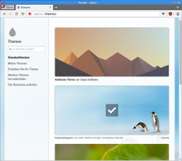

Opera
Dieser Artikel wurde für die folgenden Ubuntu-Versionen getestet:
Ubuntu 16.04 Xenial Xerus
Ubuntu 14.04 Trusty Tahr
Zum Verständnis dieses Artikels sind folgende Seiten hilfreich:
Opera ist ein vom Software-Unternehmen Opera Software ASA 
 entwickelter Browser. Dabei ist Opera keine Open-Source-Software, aber die private Nutzung kostenlos. Bis zu Version 12 werkelte im Hintergrund die eigene Render-Engine namens Presto. 2013 entschloss Opera sich, den Browser von Grund auf neu zu entwickeln, diesmal auf Basis von Chromium mit der Engine Blink, und die alte Version 12 einzustellen.
entwickelter Browser. Dabei ist Opera keine Open-Source-Software, aber die private Nutzung kostenlos. Bis zu Version 12 werkelte im Hintergrund die eigene Render-Engine namens Presto. 2013 entschloss Opera sich, den Browser von Grund auf neu zu entwickeln, diesmal auf Basis von Chromium mit der Engine Blink, und die alte Version 12 einzustellen.
Seit Dezember 2014 wird das "neue" Opera auch wieder für Linux angeboten – allerdings ohne Zusatzprogramme wie den bisherigen E-Mail-Client. Dieser neuen Opera-Version fehlen daher viele der früheren Alleinstellungsmerkmale und Funktionen.
Eine kleine Auswahl der unterstützten Funktionen:
Startseite mit Schnellzugriffen (Speed Dial)
Benutzeroberfläche mit Reitern inkl. Tab Stacking
Erweiterungen/Add-ons
Passwort-Manager
Import- und Exportfunktion von Lesezeichen (Bookmarks/Favoriten) diverser Browser
Da Opera und Opera 12 zwei getrennte Programme sind, gibt es auch zwei getrennte Wiki-Artikel, Opera 12 sollte wg. fehlender Sicherheitaktualisierungen allerdings nicht mehr verwendet werden und ist inzwischen im Archiv. Außerdem bewerben sich zwei weitere Projekte als Nachfolger: Vivaldi und Otter .
Opera benötigt die SSE2-Befehlserweiterung. Ist diese nicht gegeben erhält man beim Start über ein Terminal die Meldung
Ungültiger Maschinenbefehl
Installation¶

Opera ist kein Bestandteil der offiziellen Paketquellen und muss daher über ein Fremdpaket installiert werden.
Fremdpaket¶
| Paketquelle hinzufügen |
Von Opera werden
DEB-Pakete  angeboten.
Die unterstützten Ubuntuversionen und Architekturen werden aufgelistet.
Nachdem man sie für die korrekte Ubuntuversion und Architektur geladen hat, müssen DEB-Pakete noch installiert werden.
angeboten.
Die unterstützten Ubuntuversionen und Architekturen werden aufgelistet.
Nachdem man sie für die korrekte Ubuntuversion und Architektur geladen hat, müssen DEB-Pakete noch installiert werden.
Hinweis!
Fremdpakete können das System gefährden.
Installiert man das Fremdpaket, ist es wichtig zu wissen, dass ein neuer Paketquellen-Eintrag ("Repository") hinzugefügt wird und Opera so automatisch mit Updates versorgt wird.
Des Weiteren wird Opera als systemweiter Standardbrowser gesetzt. Möchte man diese Vorgabe rückgängig machen, verwendet man folgenden Befehl im Terminal [2]:
sudo update-alternatives --config x-www-browser
Weitere Details sind dem Artikel Alternativen-System zu entnehmen.
Verwendung¶
Startseite¶
| Startseite von Opera |
Beim ersten Start von Opera wird eine vorkonfigurierte Schnellwahlseite angezeigt. Im mittleren oberen Bereich ist dazu eine Google-Suchleiste vorhanden. Nach Eingabe eines Suchbegriffs wird nach dessen Bestätigung ein Fenster mit den Suchergebnissen geöffnet. Im mittleren Bereich ist die Schnellwahl zu einer Anzahl von Internetseiten zu sehen. Im unteren Bereich kann zwischen Schnellansicht, Lesezeichenverwaltung, Discovery-Funktion, Tabs und Verlauf gewechselt werden.
Schnellansicht¶
Hierbei werden die häufigsten besuchten Seiten als Miniaturansicht angezeigt. Es können sowohl einzelne Seiten als auch mehrere Seiten in eine Art Ordnerfunktion gruppiert werden. Auch auf unterstützende Erweiterungen können hierbei zugegriffen werden. Mit einem Klick auf die rechte Maustaste können weitere Webseiten oder Erweiterungen der Ansicht hinzugefügt werden. Außerdem kann das Hintergrundbild in Form von Themen geändert werden (siehe unten).
Lesezeichenverwaltung¶
Links auf Internetseiten können in der Lesezeichenverwaltung organisiert werden. Dabei können sie entweder bereits vordefinierten und eigenen Ordnern, der Lesezeichenleiste oder der Schnellwahl zugewiesen werden. Werden sie nirgends einsortiert, landen sie in "Unsortierte Lesezeichen". Unter "Meine Ordner" können eigene Ordnerstrukturen aufgebaut und bei Bedarf alphabetisch sortiert werden. Sie können nachträglich verändert oder gelöscht werden und wenn der Ordner angeklickt wird, können alle Links darin gleichzeitig geöffnet werden. Links in der Lesezeichenleiste werden bei entsprechender Aktivierung derselbigen in den Einstellungen unterhalb der Adressleiste auf jeder Seite angezeigt.
Discover-Funktion¶
Hierbei handelt es sich um eine Nachrichtenübersicht aus verschiedenen Bereichen wie Nachrichten, Gesundheit, Ernährung und weiteren. Unter Einstellungen können sowohl die Kategorien ausgewählt werden als auch die Region, aus der die Nachrichten kommen (meist in deren Landessprache).
Tabs¶
In der Sektion "Tabs" wird auf ein bei Opera erstelltes Konto zugegriffen. Dabei kann über verschiedene Geräte hinweg auf aufgerufene Internetseiten, die Schnellwahleinträge, Passwörter und Einstellungen zugegriffen werden. Es kann jeweils eingestellt werden, welche Daten übertragen werden soll.
Verlauf¶
Im Verlauf sind die aufgeführten Internetseiten nach Datum und Uhrzeit aufgelistet. Von hieraus können die Links sowohl gespeichert als gelöscht werden.
Einstellungen¶
In den Einstellungen kann Opera detailliert eingerichtet werden. Standardmäßig werden nur die wichtigsten Einstellungen angezeigt. Ganz unten auf der Seite "Browser" können erweiterte Einstellungsmöglichkeiten aktiviert werden.
Im Bereich "Websites" kann sowohl das optische Aussehen von Webseiten beeinflusst werden als auch der Zugriff auf vorhandene Hardware wie Mikrofon und Kamera. Des Weiteren kann hier eingestellt werden, ob Javascript auf den Webseiten ausgeführt werden darf. Ein weiterer Punkt gilt der Konfiguration von Plug-ins.
Unter "Datenschutz & Sicherheit" können diverse Einstellungen zur Privatsphäre mit Passwörtern und Cookie konfiguriert werden.
| Opera Einstellungen |
| Opera Plug-ins |
Erweiterungen¶
Über das Hauptmenü kommt man auch auf den Punkt "Erweiterungen". Hiermit kann Opera um vielfältige Anwendungen wie z.B. Werbeblocker, Downloadmanagern oder anderen Werkzeugen erweitert werden. Auf diese können dann je nach Einstellungsmöglichkeit der Anwendung entweder über die Symbolleiste, die Schnellansicht oder über eine Seitenleiste, welche links im Browserfenster erscheint, zugegriffen werden.
Themen¶
Unter dem Menüpunkt "Themen" kann in Opera der Hintergrund geändert werden. Dieser wird z.B. angezeigt, wenn die Startseite von Opera geöffnet ist. Es können sowohl statische Themen wie auch solche mit Animationen ausgewählt werden. Über einen Dialog können dabei sowohl eigene Themen erstellt werden oder von Opera aus einem Katalog heruntergeladen werden.
| Opera Erweiterungen |
|  |
| Opera Themen |
Interne Opera-Seiten¶
| Interne Opera-Seiten | |
| Adresse | Beschreibung |
opera:about | Über Opera (siehe auch Problembehebung) |
opera:bookmarks | Lesezeichenleiste |
opera:bookmark-importer | Lesezeichen importieren |
opera:downloads | Downloads |
opera:extensions | Erweiterungen anzeigen |
opera:flags | Experimentelles (zum Testen) |
opera:gpu | GPU-Übersicht |
opera:history | Verlauf |
opera:histograms | Histogramme (Statistiken) |
opera:plugins | Plug-Ins |
opera:remote-debug | Remote Debugging |
opera:themes | Themen |
| Interne Opera-Einstellungen | |
| Adresse | Beschreibung |
opera:settings | Einstellungen |
opera:settings/acceptlanguages | Bevorzugte Sprachen für Webseiten |
opera:settings/clearBrowserData | Browsercache löschen |
opera:settings/languages | Wörterbücher |
opera:settings/searchEngines | Suchmaschinen |
opera:settings/contentExceptions#location | Geolokation-Ausnahmen |
Problembehebung¶
Sicherheitsaktualisierungen¶
Sicherheitsaktualisierungen sind immer nur in der neuesten Opera-Version enthalten (ältere Versionen werden nicht gepflegt). Treue Opera-Fans kennen das, aber alle anderen sollten dies zumindest wissen, bevor sie sich für Opera entscheiden.
Flash¶
Wer noch Adobe Flash benötigt, installiert die PPAPI-Version über das Paket adobe-flashplugin wie im genannten Artikel beschrieben.
Java¶
Ein Browser-Plugin für Java ist nicht vorhanden und auch nicht mehr vorgesehen. Java-Applets werden daher nicht mehr unterstützt . Webseiten, die Java Web Start nutzen, sind nicht betroffen und erfordern die Installation einer Java-Laufzeitumgebung (siehe Java/Installation).
Deinstallation¶
Nach dem Deinstallieren über die Paketverwaltung können anschließend einige Verzeichnisse im Homeverzeichnis gelöscht werden. Mit der Eingabe von:
opera:about
in die Adresszeile kann man vor der Deinstallation überprüfen, welche Speicherpfade benutzt und wo die Einstellungen gespeichert wurden.
 Programmübersicht
Programmübersicht- Erstellt mit Inyoka
-
 2004 – 2017 ubuntuusers.de • Einige Rechte vorbehalten
2004 – 2017 ubuntuusers.de • Einige Rechte vorbehalten
Lizenz • Kontakt • Datenschutz • Impressum • Serverstatus -
Serverhousing gespendet von